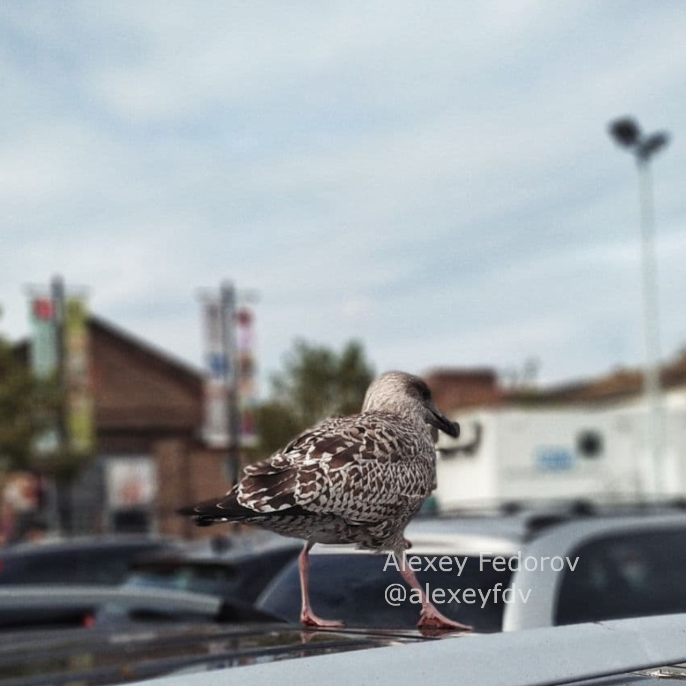
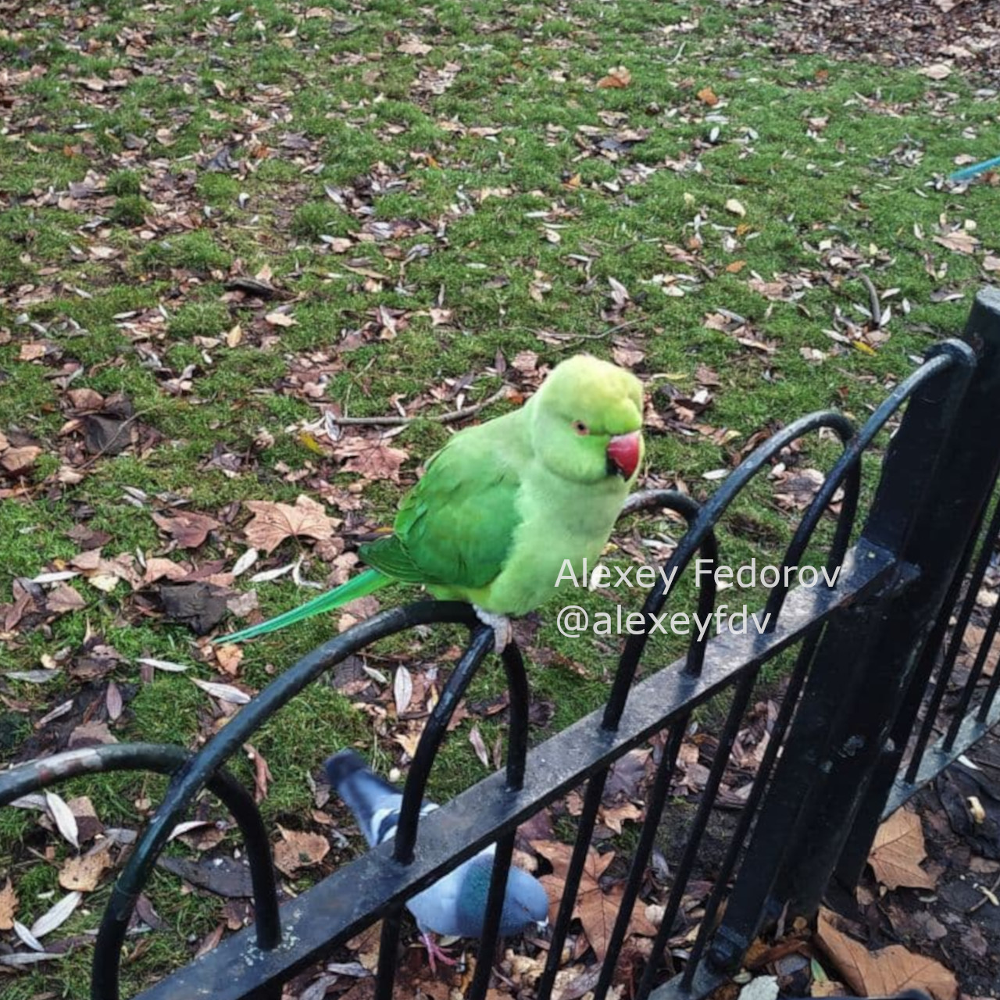
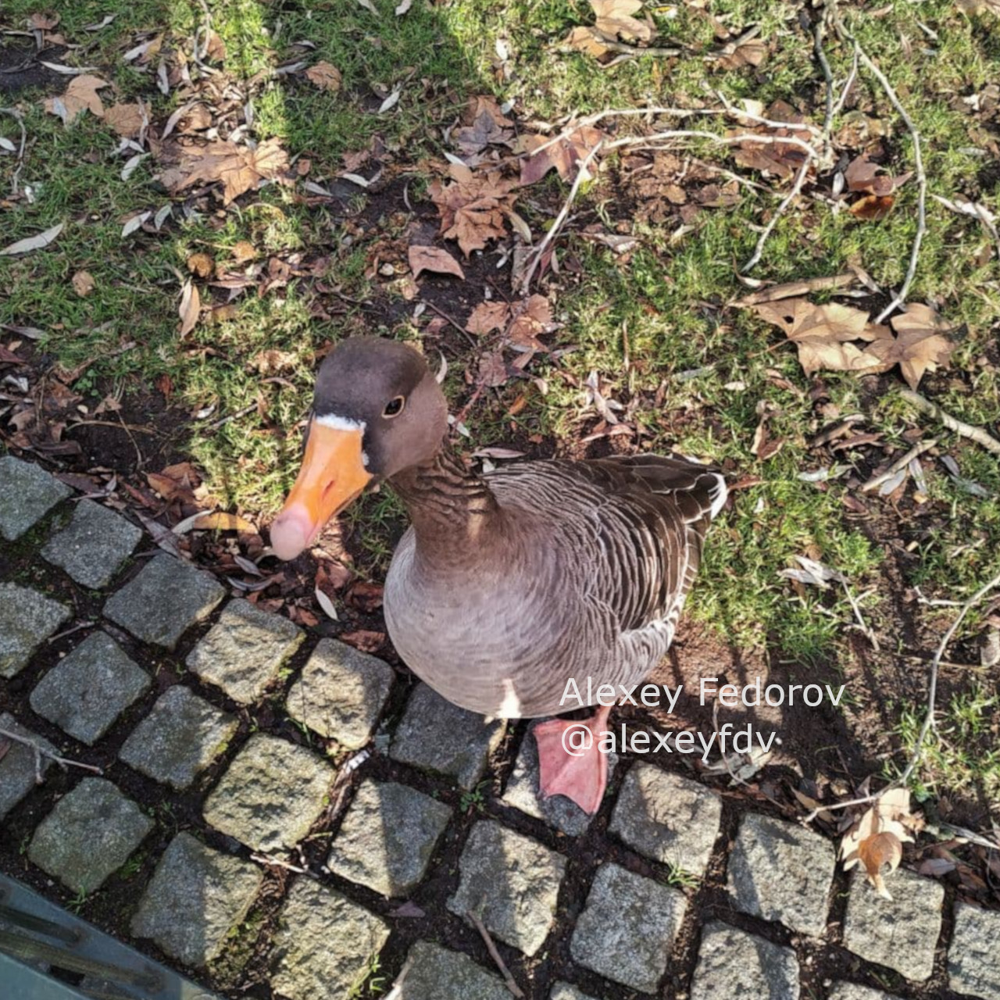
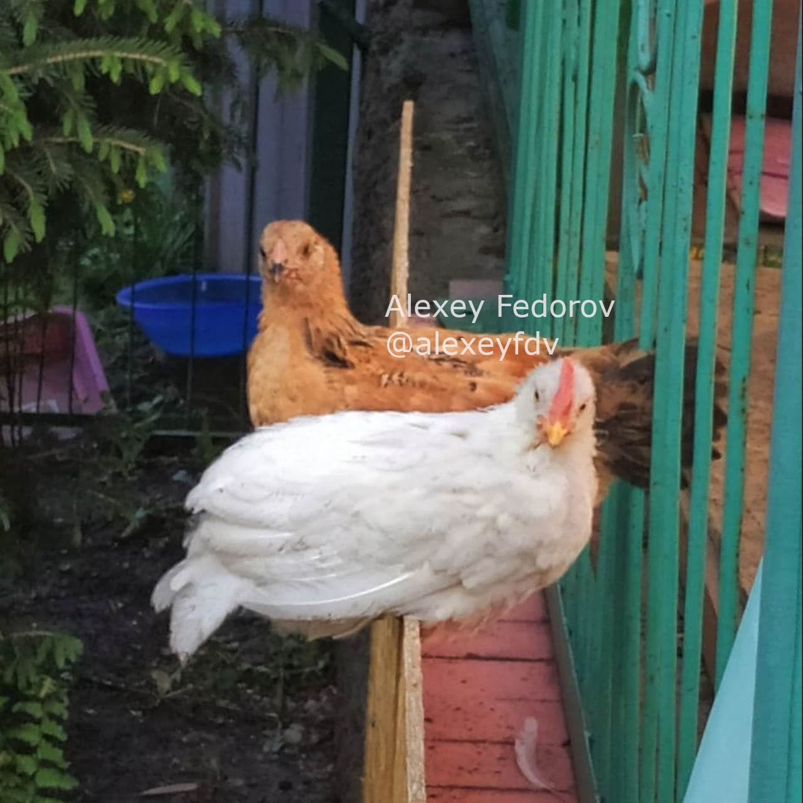

Birdwatching is a real fun
It is literally for everyone. If you like to spend time with some kind of physical activity, you will be more than happy. Birds are not just fast they also can fly. The perfect hobby for active people. However, If you don't enjoy physical activities much, but prefer to be laying down in the same place for a whole day, good news for you. You can just lay down in any place, preferably outside or next to a window, and enjoy. Birds will fly next to you, and you don't need to do anything.
Find out more about birdwatching
These are my best shots from birdwatching:

Seagull

Pigeon

Goose (I gues)

Gallus domesticus